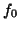

Next:
Q-factor
Up:
Virtual AFM Box
Previous:
Elastic_Constant
Contents
Natural_Frequency
Natural frequency

of the cantilever far away from the surface, in Hz.
Parameters
:
Default
: 60406.0 Hz
Example
:
Natural_Frequency 6.0500e5
Lev Kantorovich 2005-08-04